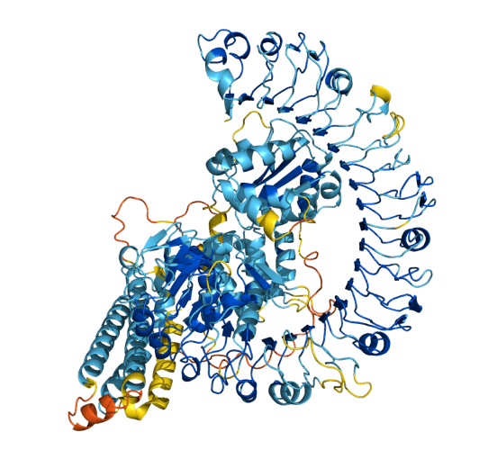
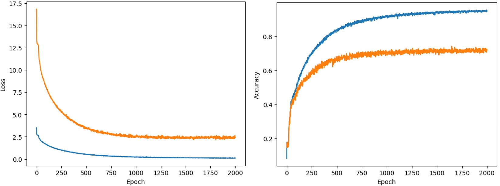

(Ongoing) Analyzing Impact of Heat Exposure/Climate Change on Heat-Shock Protein Functionality
My latest project expands on my previous research, this time investigating the impact of environmental factors like heat on protein function. Specifically, I'm exploring heat-shock proteins, which are specific proteins in the body that help other proteins continue functioning in extended exposure to varying temperatures, essential for our bodies. I use data analysis techniques and machine learning to investigate the relationship between the two. With climate change threatening to permantently raise global temperatures, understanding heat-shock proteins becomes more and more critical.
This project has been challenging, especially since finding data on the less-explored heat-shock proteins was difficult. I'm planning to publish the paper to Cornell's arXiv journal soon, as we formulate final results.
Analysis of Artificial Intelligence Methods for Predicting Protein Function Based on Primary Structure (Link)

In 2021, Google's AI divison DeepMind released a groundbreaking (and recently, Nobel-prize winning) AI known as AlphaFold. AlphaFold could, given the primary structure (amino acid chain) of a protein, predict the tertiary structure (3D model). This was revolutionary because modelling the 3D structure of proteins is an essential tool for drug development and more, since the function, or purpose, of the protein in the body can be understood by examining its structure. Traditional methods to obtain the 3D structure were increibly time-taking and expensive.

I was super excited reading about AlphaFold, especially because it was so new: there are opportunities to investigate its limitations. Since the end goal was to understand the function of proteins, I employed machine-learning to see if we could directly predict protein function from primary structure, skipping the middleman step of modeling protein structure. My first approach involved using CountVectorizer to process amino acid data numerically and my second approach involved a Long-Short Term Memory (LSTM) model to better process the sequential data. The LSTM approach recieved a ~70% accuracy, which is fairly good given the scope of the problem I was tackling.
Aside from the computational/technolgical limitations discussed in my paper, I've recently learned about more obstacles for this approach. Proteins often work in aggregates, meaning that proteins with wildly different primary structures can perform the same function. This can confuse the AI model, so future attempts with this approach should find ways to help the AI understand the differences in structure, for higher accuracy. I truly love this project because it was my first time using AI to dive deep into a problem that truly excited me, with a unique approach of my own. I hope to contribute future research to understanding proteins, be it through exploring the limitations of this approach or any other avenue of the problem.
Privacy Concerns in the Big Data Era (Link)
This was my first dive into research. Inspired by both my interests in debate/policy and technology, I chose to explore the impact of social media on data privacy, and how various technological solutions and government regulations could mitigate the crisis. This was where I learned that reading research papers is HARD, especially technical ones (maybe I shouldn't have chosen to do a literature review). Overall, it was a great experience and made me super interested in the research process!